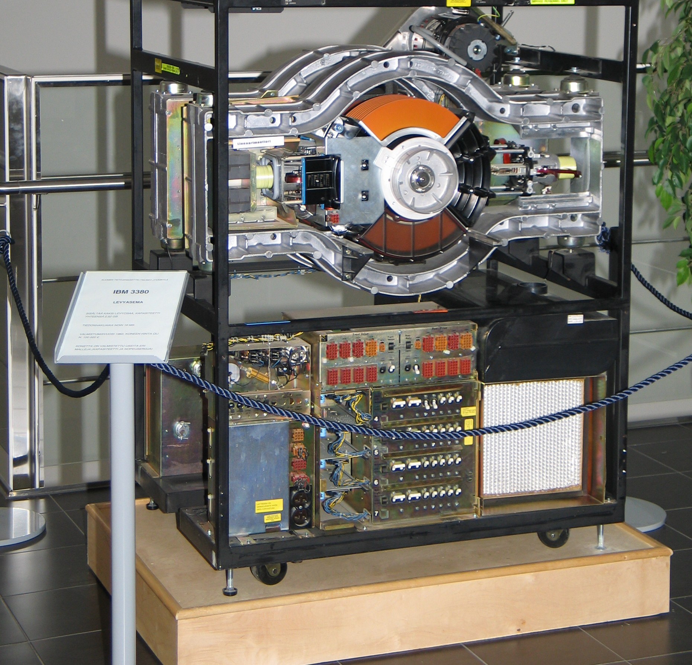

RAID: 存储设备的虚拟化
性能和可靠性，我们能不能全都要呢？
- Redundant Array of Inexpensive (Independent) Disks (RAID)
- 把多个 (不可靠的) 磁盘虚拟成一块
非常可靠且性能极高 的虚拟磁盘- A case for redundant arrays of inexpensive disks (RAID) (SIGMOD'88)
- 一个 “反向” 的虚拟化
- 类比：进程/虚存/文件把 “一个设备” 虚拟成多份

遍地是黄金的年代：凑几块盘，掀翻整个产业链！
- “Single Large Expensive Disks” (IBM 3380), v.s.
- “Redundant Array of Inexpensive Disks”
RAID: Design Space
RAID (虚拟化) = 虚拟磁盘块到物理磁盘块的 “映射”。
- 虚拟磁盘块可以存储在任何虚拟磁盘上
- 虚拟磁盘可以
并行 - 存储 $>1$ 份即可实现容错
- 虚拟磁盘可以
RAID-0：更大的容量、更快的速度
- 读速度 x 2；写速度 x 2
RAID-1：镜像 (容错)
- 保持两块盘完全一样
- 读速度 x 2；写速度保持一致
容错的代价
浪费了一块盘的容量……
- 如果我们有 100 块盘
- 但假设不会有两块盘同时 fail-stop？
能不能只用 1-bit 的冗余，恢复出一个丢失的 bit？
- $x = a \oplus b \oplus c \oplus d$
- $a = x \oplus b \oplus c \oplus d$
- $b = a \oplus x \oplus c \oplus d$
- $c = a \oplus b \oplus x \oplus d$
- $d = a \oplus b \oplus c \oplus x$
- 100 块盘里，99 块盘都是数据！
- Caveat: random write 性能
RAID-5: Rotating Parity
“交错排列” parity block!

RAID: 讨论
更快、更可靠、近乎免费的大容量磁盘
- 革了 “高可靠性磁盘” 的命
- 成为今天服务器的标准配置
- 类似的里程碑
- The Google file system (SOSP'03) 和 MapReduce: Simplified data processing on large clusters (OSDI'04) 开启 “大数据” 时代
RAID 的可靠性
- RAID 系统发生断电？
- 例子：RAID-1 镜像盘出现不一致的数据
- 检测到磁盘坏？
- 自动重组